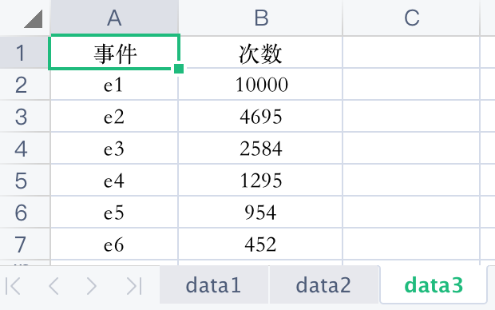
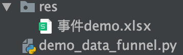
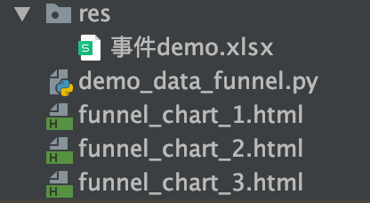
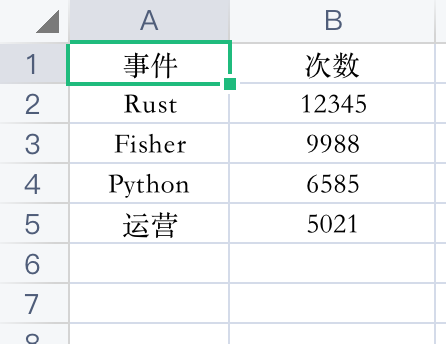
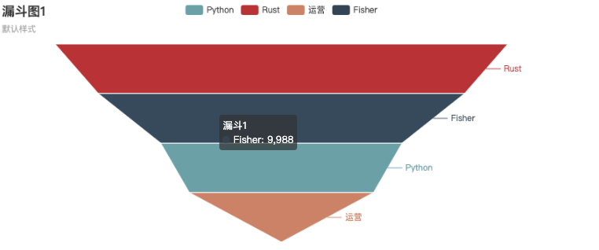
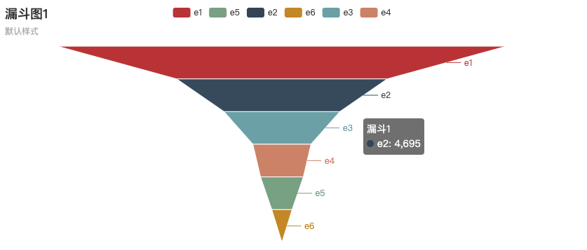
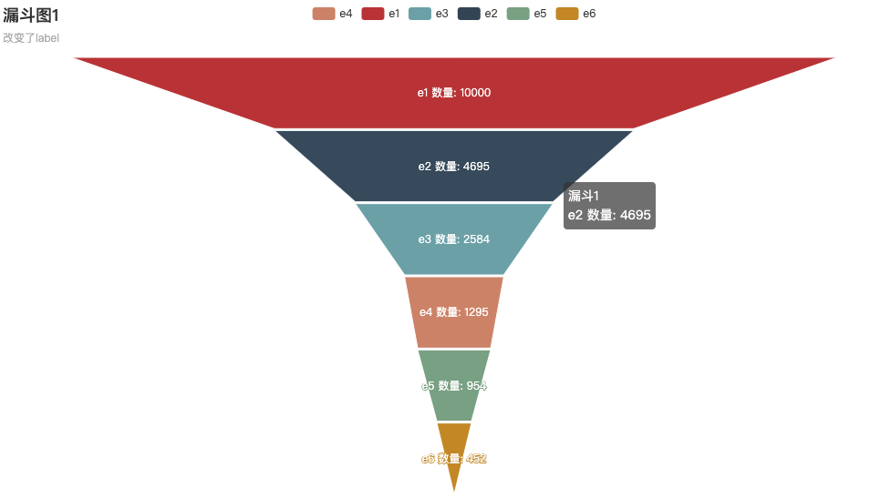
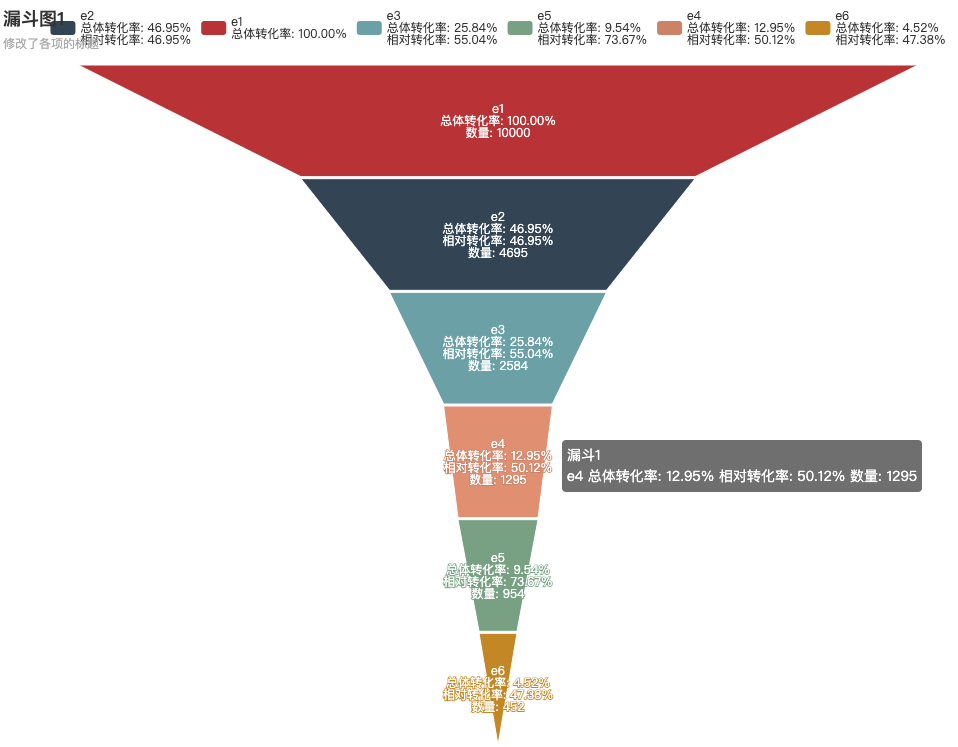

【运营的Python指南】绘制漏斗图
本文最后更新于：2023年4月15日 下午
写给运营朋友的Python指南。
漏斗图可对业务的各个关键环节进行描述，衡量各个环节的业务表现。可以非常直观地看到各个业务地转化程度。
本文介绍使用Python从Excel中读取数据，使用pyecharts绘制漏斗图。
操作步骤说明
下面是操作的具体步骤。
1.开发环境
示例使用的IDE是PyCharm社区版，开发语言是Python3.x。
在工程中，新建Python文件demo_data_funnel.py。然后在同级的位置新建一个res文件夹，后面用来存放文件。
2.准备数据
创建一个Excel文件事件demo.xlsx。将表名改为data3。这个名字在代码中会用到。
写入两列数据1
2
3
4
5
6事件 次数
e1 10000
e2 4695
e3 2584
e4 1295
e5 954
得到如下的表格：

与demo_data_funnel.py同级的地方新建了res文件夹，把Excel文件放进去。

这里我们暂时用测试数据看效果。后面再填入你的真实数据。
3.编写脚本
现在开始写Python代码。demo_data_funnel.py完整的代码如下1
2
3
4
5
6
7
8
9
10
11
12
13
14
15
16
17
18
19
20
21
22
23
24
25
26
27
28
29
30
31
32
33
34
35
36
37
38
39
40
41
42
43
44
45
46
47
48
49
50
51
52
53
54
55
56
57
58
59
60
61
62
63
64
65
66
67
68
69
70
71
72
73from openpyxl import load_workbook
from pyecharts.charts import Funnel
import pyecharts.options as opts
def read_in_data(file_path):
print('获取原始数据 >>>')
wb = load_workbook(file_path)
st = wb['data3']
data_list = []
for row_index in range(2, st.max_row + 1):
event_name = st.cell(row=row_index, column=1).value
event_value = st.cell(row=row_index, column=2).value
data_list.append([event_name, event_value])
print(data_list)
return data_list
def draw_funnel_default(input_data):
print('绘制漏斗图 >>> https://gallery.pyecharts.org/#/Funnel/funnel_base')
(
Funnel(init_opts=opts.InitOpts(width="800px", height="400px"))
.add(series_name='漏斗1', data_pair=input_data, )
.set_global_opts(title_opts=opts.TitleOpts(title="漏斗图1", subtitle="默认样式"))
.render("funnel_chart_1.html")
)
def draw_funnel_2(input_data):
print('绘制漏斗图1 >>> https://gallery.pyecharts.org/#/Funnel/funnel_base')
(
Funnel(init_opts=opts.InitOpts(width="1000px", height="600px"))
.add(series_name='漏斗1', data_pair=input_data,
label_opts=opts.LabelOpts(position="inside", formatter='{b} 数量: {c}'),
gap=2,
tooltip_opts=opts.TooltipOpts(trigger="item", formatter="{a} <br/>{b} 数量: {c}"),
)
.set_global_opts(title_opts=opts.TitleOpts(title="漏斗图1", subtitle="改变了label"))
.render("funnel_chart_2.html")
)
def draw_funnel_3(input_data):
print('绘制漏斗图2 >>> https://gallery.pyecharts.org/#/Funnel/funnel_base')
data = input_data.copy() # 复制一份出来处理标题
base_value = data[0][1]
for x in range(0, len(data)):
event_name = data[x][0]
value = data[x][1] # 拿到数值
ratio = value / base_value
event_name += '\n总体转化率: {:.2f}%'.format(ratio * 100)
if x > 0:
event_name += '\n相对转化率: {:.2f}%'.format(100 * value / data[x - 1][1])
data[x][0] = event_name
print(event_name)
(
Funnel(init_opts=opts.InitOpts(width="1000px", height="800px"))
.add(series_name='漏斗1', data_pair=data,
label_opts=opts.LabelOpts(position="inside", formatter='{b}\n数量: {c}'),
gap=2,
tooltip_opts=opts.TooltipOpts(trigger="item", formatter="{a} <br/>{b} 数量: {c}"),
)
.set_global_opts(title_opts=opts.TitleOpts(title="漏斗图1", subtitle="修改了各项的标题"))
.render("funnel_chart_3.html")
)
if __name__ == '__main__':
src_data = read_in_data('res/事件demo.xlsx')
draw_funnel_default(src_data)
draw_funnel_2(src_data)
draw_funnel_3(src_data)
把上面的代码复制进你的脚本里。
可能会需要装上pyecharts和openpyxl。用PyCharm的时候，可以点到报红线的地方，根据它的提示，把这2个库装上。
运行代码，会得到3个html文件

用浏览器打开这3个html就可以看到效果了。
把你的数据填到那个Excel里，保存。然后运行代码即可。
比如说把Excel里的事件改一下

运行代码，可以得到新的结果

以上是简化流程，运营朋友照着做，一般都可以看到运行结果。下面我们来看一些细节。
读取数据
我们先准备一些测试数据。新建一个xlsx文件，填入测试数据。如下图：
我们把数据放在了data3里。A列是事件名称，B列是次数。名称这里可以随意替换，可根据业务需求进行修改。
事件流程按照先后顺序，从上到下排列好。
首先需要把数据从excel中读取出来。我们用openpyxl来操作。1
2
3
4
5
6
7
8
9
10
11
12
13from openpyxl import load_workbook
def read_in_data(file_path):
print('获取原始数据 >>>')
wb = load_workbook(file_path)
st = wb['data3']
data_list = []
for row_index in range(2, st.max_row + 1):
event_name = st.cell(row=row_index, column=1).value
event_value = st.cell(row=row_index, column=2).value
data_list.append([event_name, event_value])
print(data_list)
return data_list
将事件名和数据装到一个小的列表里[event_name, event_value]。
所有的事件放进一个大的列表，并返回。
当然，从别的途径拿到数据也是可以的。
绘制漏斗图
我们用pyecharts来绘制漏斗图。
Echarts 是一个由百度开源的数据可视化，凭借着良好的交互性，精巧的图表设计，得到了众多开发者的认可。而 Python 是一门富有表达力的语言，很适合用于数据处理。当数据分析遇上数据可视化时，pyecharts 诞生了。
pyecharts会输出html文件。
默认样式
拿到数据后，我们把数据传给Funnel。
1 | |
- 初始配置里设定宽高
InitOpts(width="800px", height="400px") input_data就是我们前面获取的数据列表；将它传给data_pair，即data_pair=input_data- 输出的网页文件名为
funnel_chart_1.html set_global_opts()方法设置全局配置- 标题设置
title="漏斗图1" - 副标题设置
subtitle="默认样式"
- 标题设置
输出的html文件，用浏览器打开，如图：

鼠标放上去会有小弹框提示（tooltip）
修改label
pyecharts开放了很多配置。我们可以修改一下每一项的标题。1
2
3
4
5
6
7
8
9
10
11
12def draw_funnel_2(input_data):
print('绘制漏斗图1 >>> https://gallery.pyecharts.org/#/Funnel/funnel_base')
(
Funnel(init_opts=opts.InitOpts(width="1000px", height="600px"))
.add(series_name='漏斗1', data_pair=input_data,
label_opts=opts.LabelOpts(position="inside", formatter='{b} 数量: {c}'),
gap=2,
tooltip_opts=opts.TooltipOpts(trigger="item", formatter="{a} <br/>{b} 数量: {c}"),
)
.set_global_opts(title_opts=opts.TitleOpts(title="漏斗图1", subtitle="改变了label"))
.render("funnel_chart_2.html")
)
formatter
{a}是series_name，在这里是图表的名字{b}是这一项的标题{c}是这一项的数量
tooltip_opts和label_opts都会用到formatter。

自己计算转化率
为了显示出相对转化率和总体转化率。我们可以自己计算。
1 | |
在for循环里计算转化率，并把结果写到事件的名称里。
